OCI Container Instances は、コンテナ用に最適化されたサーバレス・コンピューティングでアプリケーションを実行できます。OCIの管理コンソールからコンピュートシェイプ、リソース割り当て、ネットワーク構成をプロビジョニングして、複数のコンテナをローンチできます。Kubernetes をはじめとするコンテナ・オーケストレーション・プラットフォームを必要としないコンテナベースのワークロードに適したサービスです。
OCI Container Instances上でWordPress環境を構築して、実際にアプリケーションを動かす流れを体験します。
前提条件
- クラウド環境
- Oracle Cloudのアカウントを取得済みであること
ハンズオン環境のイメージ
1.OCI Container Instancesのプロビジョニング
ここでは、OCI Container Instancesのプロビジョニングを行います。
ハンバーガーメニューをクリックします。
開発者サービス-コンテナ・インスタンスを選択します。
Create container instanceボタンをクリックします。

以下画像赤枠の箇所を変更します。それ以外はデフォルト値です。
- 「Name」：container-instance-wordpress
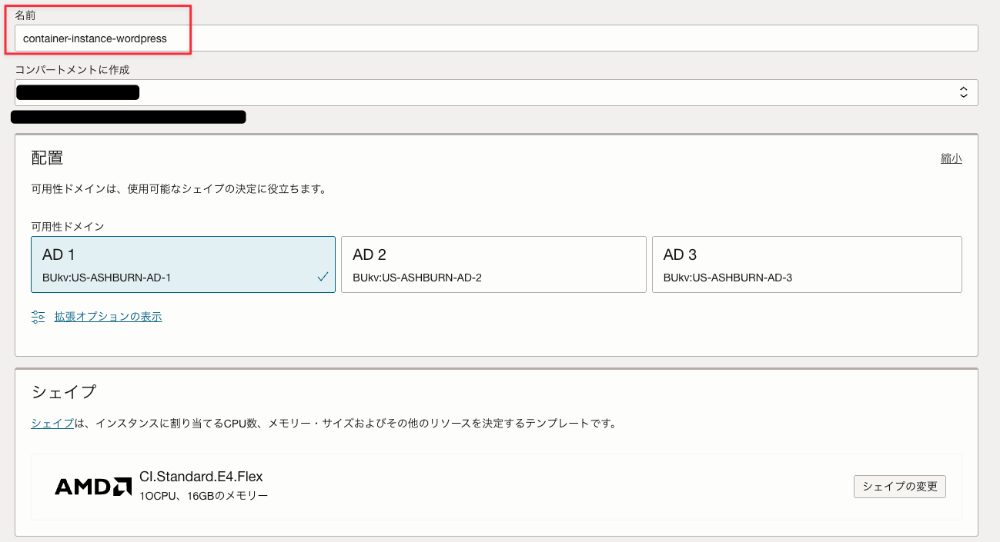
Networkingの下にあるShow advanced optionsをクリックします。
「Container restart policy」を以下の設定にします。
- 「Container restart policy」：always
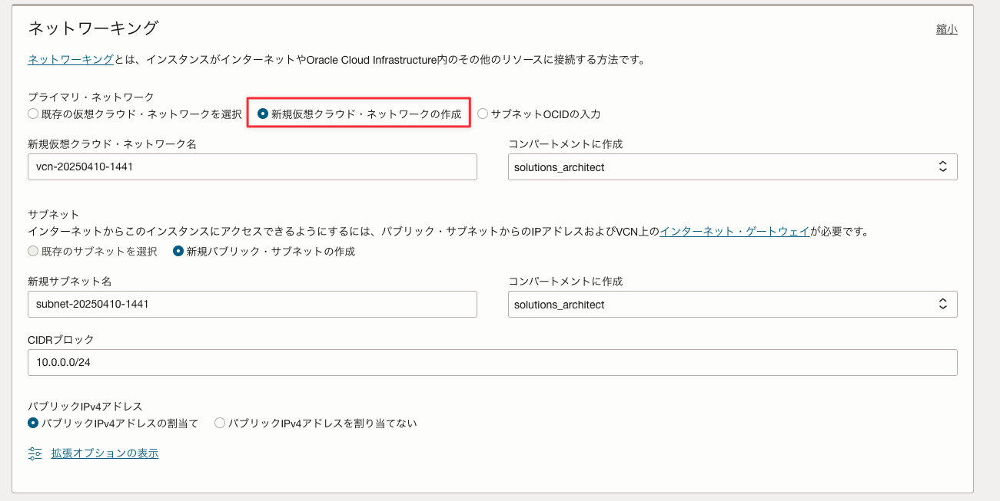
次ボタンをクリックします。
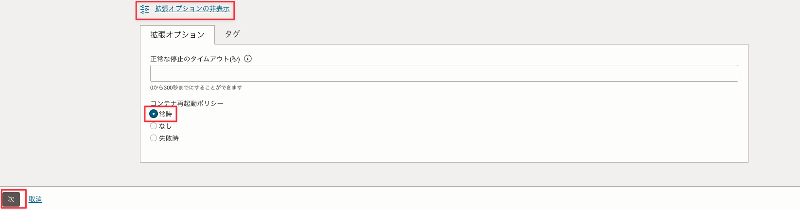
WordPress のデータベースを構成する MySQL イメージを設定します。最初に、Name オプションをdbと入力します。そして、Select imageボタンをクリックします。
- 「Name オプション」：db

External registryタブを選択して、以下の設定を行います。
- 「Registry hostname」：docker.io
- 「Repository」：mysql
- 「Tag オプション」：8.0.23
タブですが、OCI Container Registryは、OCI のコンテナレジストリ（OCIR）に格納されているイメージを設定できます。External registryは、パブリックサービスなどのコンテナレジストリを設定できます。
ここでは、 Docker Hub にある MySQL の公式コンテナイメージを使用します。
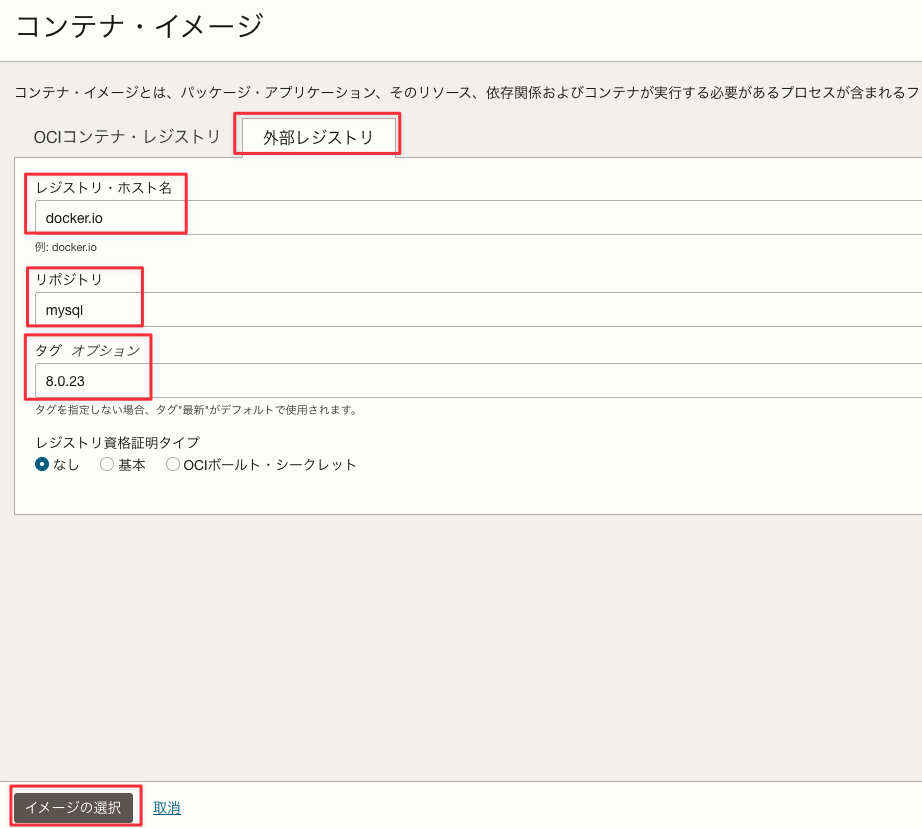
Select imageボタンをクリックします。
以下の環境変数を設定します。WordPress 用のデータベース設定です。最初に、「+ Another variable」ボタンを3回クリックして、その後設定値を入力します。
- 「MYSQL_ROOT_PASSWORD」：somewordpress
- 「MYSQL_DATABASE」：wordpress
- 「MYSQL_USER」：wordpress
- 「MYSQL_PASSWORD」：wordpress
次にShow advanced optionsテキストをクリックします。
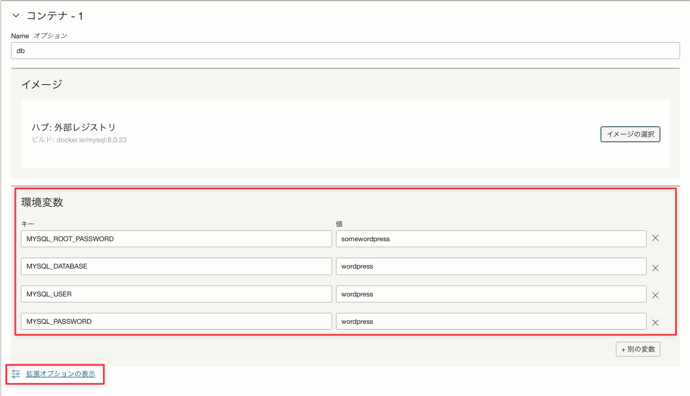
Resourcesタブでは、コンテナで消費されるリソース量を指定できます。ここでは、デフォルト値とします。次にStartup optionsタブを選択します。
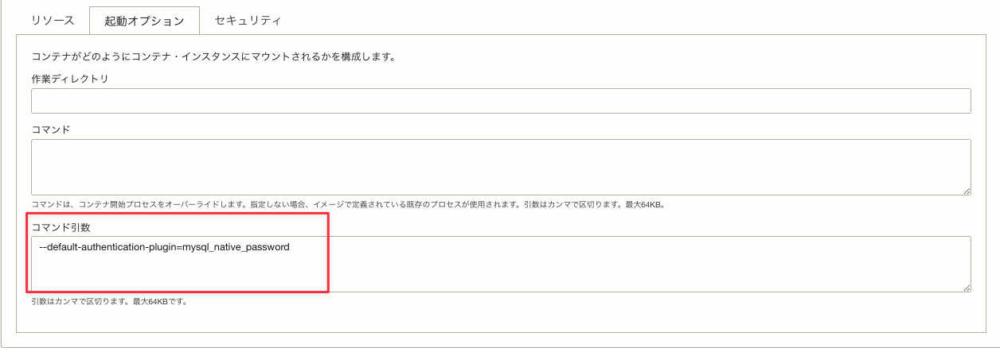
MySQL 8.04 以降、caching_sha2_password プラグインを利用した認証方式がデフォルトとなりました。ここでは、従来の認証方式のプラグイン mysql_native_password に変更します。
- 「Command arguments」： --default-authentication-plugin=mysql_native_password
※defaultの前はハイフン2個です。
+ Another container ボタンをクリックします。
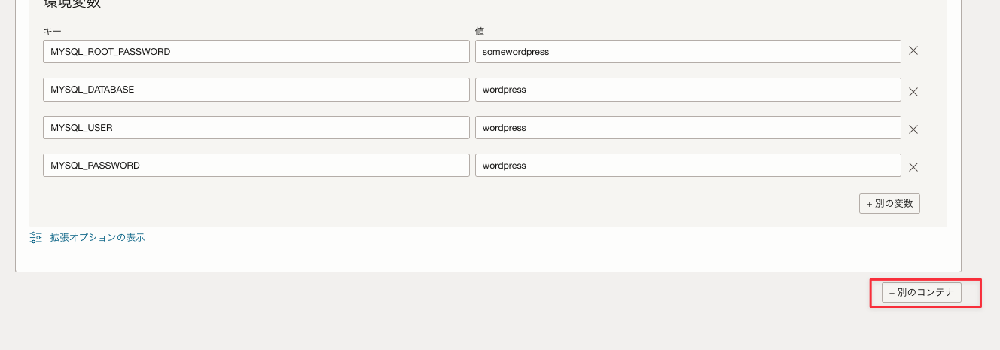
次は、wordpress アプリケーションのコンテナイメージの設定を行います。Name オプションをappと入力します。そして、Select imageボタンをクリックします。
- 「Name オプション」：app
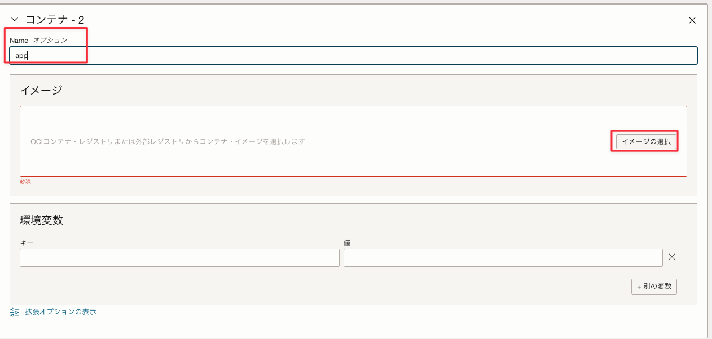
External registryタブを選択して、以下の設定を行います。WordPress は latest のコンテナイメージを利用するため、タグの指定はしません。
- 「Registry hostname」：docker.io
- 「Repository」：wordpress
Select imageボタンをクリックします。
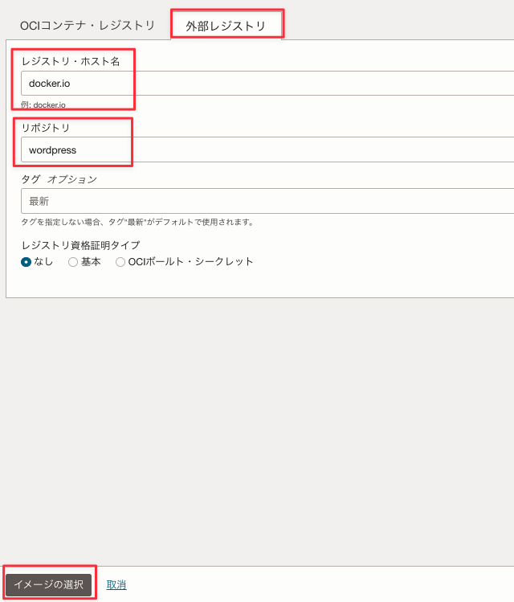
以下の環境変数を設定します。WordPress アプリケーションが MySQL に接続するために必要な設定です。最初に、+ Another variableボタンを3回クリックして、その後設定値を入力します。
- 「WORDPRESS_DB_HOST」：127.0.0.1
- 「WORDPRESS_DB_USER」：wordpress
- 「WORDPRESS_DB_PASSWORD」：wordpress
- 「WORDPRESS_DB_NAME」：wordpress
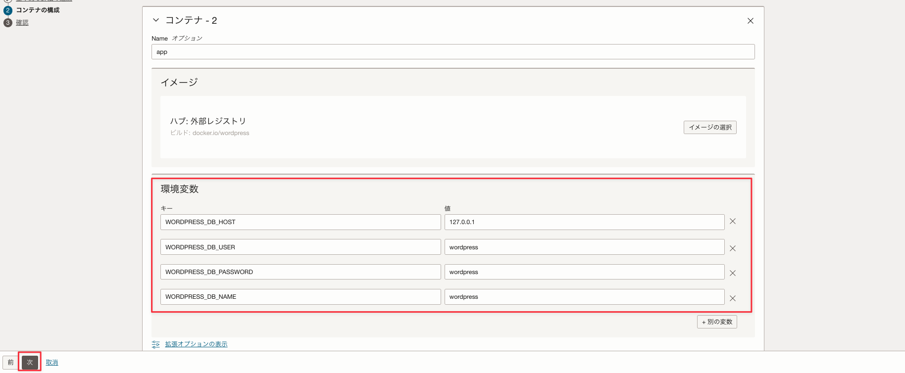
次ボタンをクリックします。
設定内容を確認します。
Createボタンをクリックします。
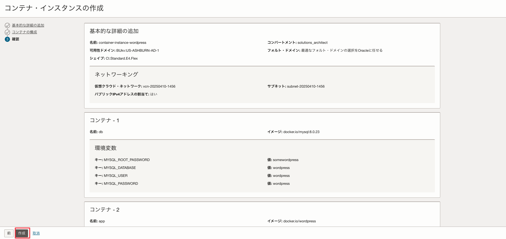
設定した app と db のコンテナが作成されます。

2.Netowrk Security Groupの作成
デフォルトでは、80ポートを使用したWebアクセスが許可されていないので、ネットワーク・セキュリティ・グループを作成して、ブラウザからアクセスできるように設定します。
ハンバーガーメニューをクリックします。

ネットワーキング-仮想クラウド・ネットワークを選択します。
対象の VCN を選択します。
左にあるリソースメニューからネットワーク・セキュリティ・グループを選択します。
ネットワーク・セキュリティ・グループの作成ボタンをクリックします。
以下の設定を行います。
- 「名前」：container-instances
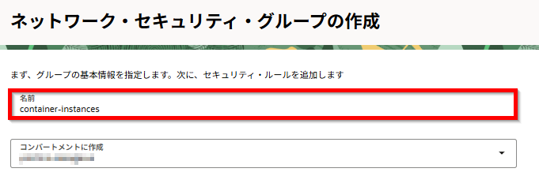
Nextボタンをクリックします。

以下の設定を行います。
- 「ソース・タイプ」：CIDR
- 「ソースCIDR」：0.0.0.0/0
- 「IPプロトコル」：TCP
- 「ソース・ポート範囲」：All
- 「宛先ポート範囲」：80
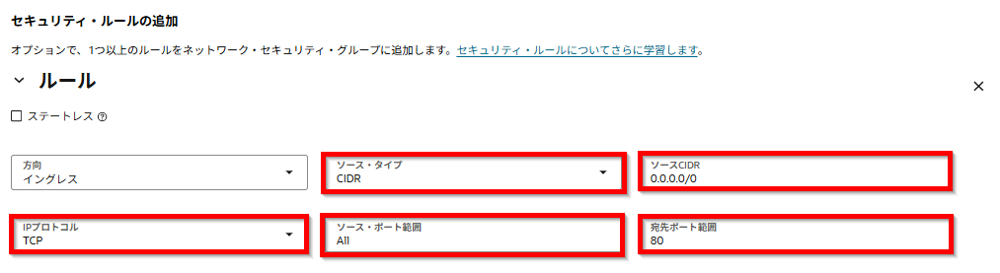
作成ボタンをクリックします。
設定されたことを確認します。
作成したコンテナ・インスタンスに、このネットワーク・セキュリティ・グループを適用します。
ハンバーガーメニューをクリックします。

開発者サービス-コンテナ・インスタンスを選択します。
対象のコンテナ・インスタンスを選択します。
Editリンクテキストをクリックします。
作成したネットワーク・セキュリティ・グループcontainer-instancesを選択して、Save changesボタンをクリックします。
Public IP addressのコピーリンクテキストをクリックします。
ブラウザを起動してコピーしたパブリックIPアドレスにアクセスして、WordPress 初期セットアップ画面が表示されることを確認します。
3.WordPressのセットアップ
日本語を選択して、次へボタンをクリックします。
任意の情報を設定して、「WordPress をインストール」ボタンをクリックします。
- サイトのタイトル: Container Instances
- ユーザ名: wordpress
- パスワード: Or@cleCI123@
- メールアドレス: test@test.oracle.com
ログインボタンをクリックします。
設定した、ユーザー名とパスワードを入力して、ログインボタンをクリックします。
以下の画面が表示されれば完了です。
再度パブリックIPアドレスにブラウザでアクセスすると、デフォルトのブログ画面が表示されます。